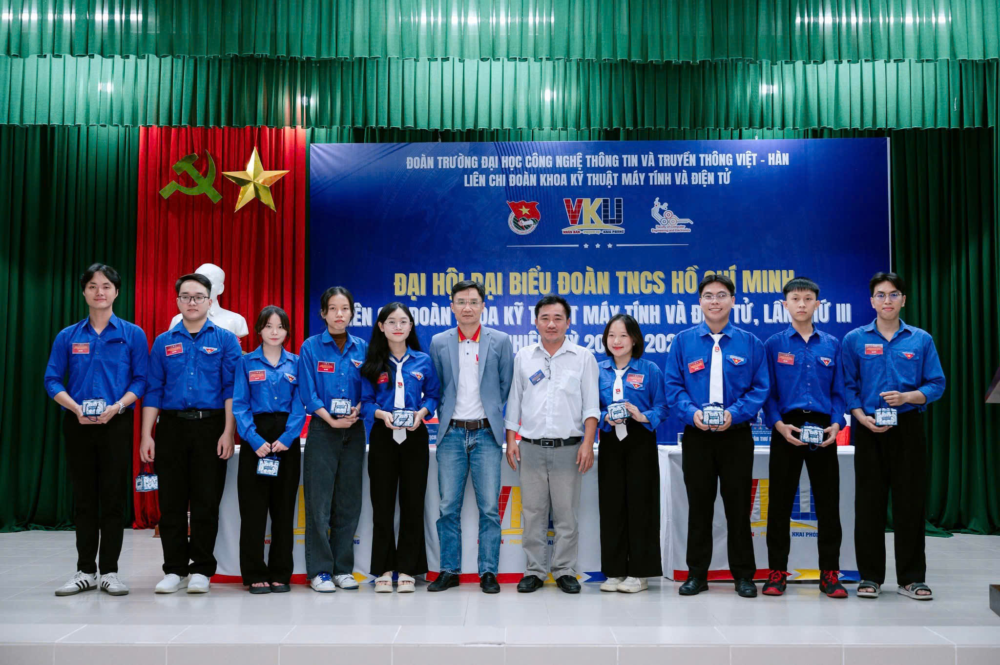

Aug 24, 2024
•
Forensic Intel
Ghosting the Shinjuku Grid: Wi-Fi Mesh Analysis
A deep dive into the hidden network layers of Tokyo's densest ward. Using passive packet capture to map the movement of temporary digital entities within the physical architecture.
TOKYO
CYBER-GEO